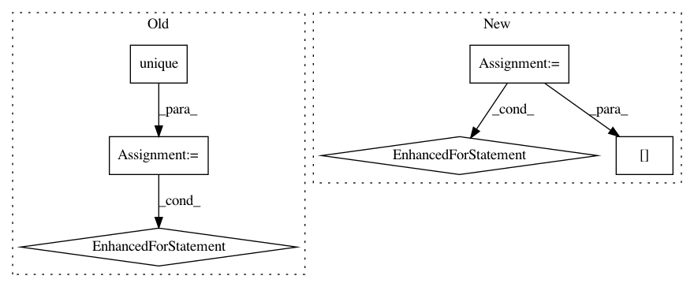

e8b2e17f4eec658f6a6d53486dbbe3eac48bb0fa,pyinterpret/core/global_interpretation/partial_dependence.py,PartialDependence,_plot_2d_2_binary_feature,#PartialDependence#Any#Any#Any#Any#Any#Any#,619
Before Change
f = plt.figure()
ax = f.add_subplot(111)
for val in np.unique(pdp[feature2]):
color = next(colors)
filter_idx = pdp[feature2] == val
pdp_vals = pdp[filter_idx][mean_col].values
x1 = pdp[filter_idx][feature1].values
ax.bar(x1, pdp_vals, color=color,
label="{} = {}".format(*[feature2, val], align="center")
)
if with_variance:
ax.errorbar(x1, pdp_vals, yerr=pdp[filter_idx][sd_col].values,
color=color)
figure_list.append(f)
axis_list.append(ax)
color = next(colors)
ax.set_xlabel(feature1)
After Change
colors = cycle(COLORS)
binary1_values = plot_data.index.values
binary2_values = plot_data.columns.values
for binary2_value in binary2_values:
color = next(colors)
yerr = std_error[binary2_value].values
upper_plane = yerr + plot_data[binary2_value].values
lower_plane = plot_data[binary2_value].values - yerr
ax.fill_between(binary1_values, lower_plane, upper_plane,
color=color,alpha=.2)
figure_list.append(f)
axis_list.append(ax)
ax.set_xlabel(feature1)
ax.set_ylabel("Predicted {}".format(class_name))
In pattern: SUPERPATTERN
Frequency: 4
Non-data size: 6
Instances
Project Name: datascienceinc/Skater
Commit Name: e8b2e17f4eec658f6a6d53486dbbe3eac48bb0fa
Time: 2017-03-30
Author: aikramer2@gmail.com
File Name: pyinterpret/core/global_interpretation/partial_dependence.py
Class Name: PartialDependence
Method Name: _plot_2d_2_binary_feature
Project Name: mne-tools/mne-python
Commit Name: 717eedd5f9ce22431e40a15c378863de6730d3e8
Time: 2019-03-15
Author: larson.eric.d@gmail.com
File Name: mne/viz/raw.py
Class Name:
Method Name: _update_raw_data
Project Name: probcomp/bayeslite
Commit Name: c17ec6faccf050596c0fb12dabda184183393aa1
Time: 2015-06-17
Author: riastradh+probcomp@csail.mit.edu
File Name: src/bqlfn.py
Class Name:
Method Name: correlation_anovar2
Project Name: bokeh/bokeh
Commit Name: d065784874671ef36edc22dfdb3e53155f219b39
Time: 2017-03-30
Author: jsignell@gmail.com
File Name: examples/plotting/file/jitter.py
Class Name:
Method Name: